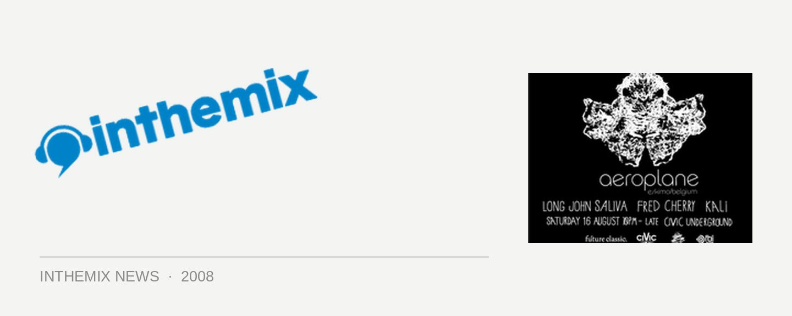

Aeroplane flies in for next Future Classic Label Night
When you think about the ‘nu-disco’ sound, you could be forgiven for thinking it’s all about the men from Norway with heaps of facial hair. Lindstrom, Prins Thomas and so forth. But surprisingly enough, one of last year’s biggest neo-disco anthems came straight out of Belgium, in the form of Caramellas from Aeroplane. And later this month they’ll be brining it to Sydney for the next Future Classic Label Night.
Come and find out what DJs like Laurent Garnier, Joakim, Mylo and Tiga have all been raving about, and catch them on their ascent to the top; with tuebns out on labels like Eskimo, Lo Recordings, Institubes and high-profile remixes on the horizon for Cut Copy and MGMT, they’ll be reaching subsonic speeds anytime soon.
Aeroplane play the next Future Classic Label Night, Saturday 16 August.